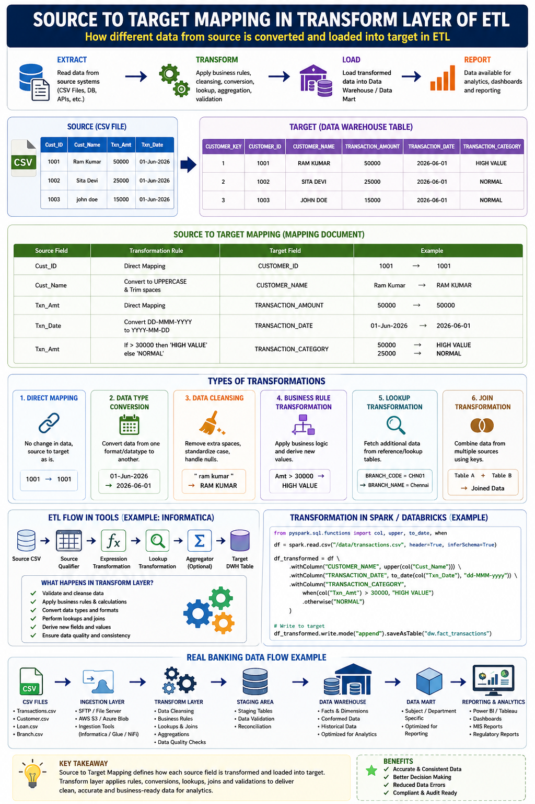

Selected Transformation Program
Banking ETL & Data Integration
🏦 Domain: Banking / Financial Services
💼 Role: Data / Program / Project Manager
🔄 Focus: Enterprise ETL, Data Integration & Data Warehouse
📊 Outcome: Trusted Banking Data for Reporting, Analytics & AI
Business Challenge
The banking organization operated multiple source systems
across core banking, customer management, loans, deposits,
cards, payments, AML, fraud, risk, finance and branch
operations. Data was distributed across databases, CSV files,
APIs, file transfers and application platforms with different
structures and formats.
The ETL and data integration program established standardized
data pipelines to extract data from heterogeneous banking
sources, cleanse and transform it using business rules,
validate and reconcile the results, and load trusted data into
enterprise Data Warehouse and Data Lake platforms.
Program Scope
-
Identify banking source systems, data owners and data domains.
-
Define enterprise data ingestion and ETL architecture.
-
Extract structured and semi-structured banking data.
-
Establish staging, transformation and target data layers.
-
Implement data cleansing, standardization and validation.
-
Implement business rules, lookups, joins and aggregations.
-
Establish data-quality and reconciliation controls.
-
Load curated data into Data Warehouse / Data Lake platforms.
-
Create subject-area data marts for reporting and analytics.
-
Establish data lineage, monitoring and operational governance.
Banking Services & Data Domains
-
Customer / CIF:
Customer profile, KYC, demographics and customer relationships.
-
Core Banking:
Accounts, balances, transactions and customer account activity.
-
Savings & Current Accounts:
Deposits, withdrawals, balances and account activity.
-
Loans:
Loan accounts, repayment schedules, EMI, outstanding balance
and delinquency.
-
Credit Risk:
Credit scores, risk ratings, exposure and risk indicators.
-
Mortgage / Home Loans:
Property, loan, repayment and portfolio information.
-
Credit Cards:
Card transactions, limits, payments and utilization.
-
Debit Cards:
Transactions, usage, status and customer activity.
-
Payments:
Domestic and international payment transactions.
-
UPI / Digital Payments:
Digital payment transactions, merchants and channels.
-
AML:
Alerts, suspicious transactions and investigation information.
-
Fraud Management:
Fraud events, rules, alerts and investigation cases.
-
Treasury:
Foreign exchange, liquidity and investment data.
-
Investment Services:
Securities, portfolios and trade information.
-
Branch Banking:
Branch, teller and branch transaction information.
-
Customer Service:
Complaints, service requests and customer interactions.
-
General Ledger:
GL accounts, journals and financial balances.
-
Regulatory Reporting:
Curated datasets supporting regulatory and compliance reporting.
-
Risk Management:
Credit, market and operational risk information.
-
Trade Finance:
Letters of credit, guarantees and trade transactions.
Banking ETL Architecture
The ETL architecture follows a layered data-integration model:
source systems feed an ingestion layer, data is persisted in a
staging area, transformed through business and data-quality rules,
and loaded into enterprise warehouse and data-mart layers for
reporting, analytics and AI use cases.

Banking ETL – Source to Target Mapping, Transformation & Analytics
ETL Lifecycle
01 — Source Discovery & Data Assessment
- Inventory banking source systems and data domains.
- Identify data owners, interfaces and data dependencies.
- Profile source data for completeness, consistency and quality.
- Identify duplicate, missing and inconsistent records.
- Define source-to-target integration requirements.
02 — Data Ingestion
- Extract data from databases, CSV files, APIs and enterprise file systems.
- Support batch and scheduled ingestion patterns.
- Validate inbound files and source-system extracts.
- Load source data into controlled staging areas.
- Track ingestion status and exceptions.
03 — Transform & Cleanse
- Standardize data formats and data types.
- Cleanse invalid, incomplete and inconsistent records.
- Apply business rules and derived-field calculations.
- Perform lookups, joins and aggregations.
- Standardize customer, account, transaction and reference data.
04 — Validate & Reconcile
- Validate source-to-target record counts.
- Perform financial and transactional reconciliation.
- Validate mandatory fields and business rules.
- Identify rejected and exception records.
- Provide data-quality reports and remediation tracking.
05 — Load & Curate
- Load transformed data into warehouse target tables.
- Populate facts, dimensions and subject-area data marts.
- Maintain historical and analytical datasets.
- Apply appropriate partitioning and performance strategies.
- Validate target data availability for consuming applications.
06 — Reporting & Analytics
- Provide curated data for business intelligence.
- Support management and operational dashboards.
- Enable regulatory and compliance reporting.
- Support customer, risk, fraud and payment analytics.
- Provide trusted datasets for AI and machine-learning use cases.
07 — Monitor & Operate
- Monitor ETL job execution and data pipelines.
- Track failures, delays and data-quality exceptions.
- Establish operational alerts and escalation processes.
- Maintain data lineage and processing audit trails.
- Optimize pipeline performance and operational reliability.
Source-to-Target Mapping
-
Direct Mapping:
Map source fields directly to target fields where no
transformation is required.
-
Data Type Conversion:
Convert source formats into target data types and standards.
-
Data Cleansing:
Remove unwanted spaces, standardize formats and handle
invalid or incomplete values.
-
Business Rule Transformation:
Apply banking business rules to derive classifications
and analytical attributes.
-
Lookup Transformation:
Enrich transaction and customer data using reference data.
-
Join Transformation:
Combine information from multiple banking source systems.
-
Aggregation:
Calculate balances, totals, transaction summaries and
analytical measures.
Example Banking Transformation
Transaction Classification
A transaction amount received from a source banking system
can be transformed into a standardized analytical category.
Example business rule:
transaction amount greater than 30,000 → HIGH VALUE;
otherwise → NORMAL.
Customer names can be standardized to uppercase, dates can
be converted from source formats into enterprise date
standards, and transaction attributes can be enriched using
reference tables.
Data Quality & Governance
- Data completeness validation.
- Data accuracy and consistency checks.
- Duplicate detection and handling.
- Source-to-target reconciliation.
- Business-rule validation.
- Data lineage and auditability.
- Data ownership and stewardship.
- Exception management and remediation.
- Controlled data access and security.
- ETL change and release governance.
Program Manager – Roles & Responsibilities
- Program Planning: Define ETL roadmap, scope, milestones, dependencies and delivery governance.
- Data Domain Coordination: Coordinate Customer, Core Banking, Loans, Cards, Payments, Risk, AML, Fraud and Finance workstreams.
- Stakeholder Management: Manage business, data owners, data engineering, architecture, analytics and technology stakeholders.
- Data Governance: Establish data-quality, ownership, lineage and reconciliation governance.
- Architecture Governance: Coordinate ETL, data warehouse, data lake and integration architecture decisions.
- Delivery Management: Govern development, testing, deployment and production transition.
- Risk & Dependency Management: Manage source-system dependencies, data-quality risks and integration issues.
- Vendor Management: Coordinate ETL, cloud, data-platform and implementation partners.
- Operational Governance: Establish monitoring, support, incident and batch-operation processes.
- Continuous Improvement: Drive pipeline optimization, automation, data-quality improvement and new analytical capabilities.
Technology Landscape
- ETL / Data Integration Platforms
- Informatica
- AWS Glue
- Python
- SQL
- Apache Spark
- Databricks
- Snowflake
- Data Warehouse
- Data Lake
- Hadoop / HDFS / Hive
- REST APIs
- SFTP / Enterprise File Transfer
- Power BI / Tableau
Key ETL & Data Metrics
- ETL job success rate.
- Data pipeline availability.
- Source-to-target reconciliation accuracy.
- Data-quality exception rate.
- Record processing volume.
- ETL processing time and latency.
- Rejected and reprocessed records.
- Data completeness and consistency.
- Reporting data freshness.
- Production incidents related to data pipelines.
Business Use Cases Enabled
- Customer 360 and customer analytics.
- Loan portfolio and credit-risk analytics.
- Credit-card and payment analytics.
- Fraud detection and investigation analytics.
- AML transaction monitoring and reporting.
- Branch performance analytics.
- Financial and management reporting.
- Regulatory and compliance reporting.
- Liquidity and treasury analytics.
- AI/ML data preparation for loan-risk and fraud prediction.
Transformation Outcome
Established an enterprise banking ETL and data-integration
capability that consolidated data from Core Banking, Customer,
Loans, Deposits, Cards, Payments, AML, Fraud, Risk and Finance
domains into trusted analytical datasets, enabling reporting,
regulatory analytics, customer insights, risk management,
fraud analytics and AI/ML-ready data foundations.
Program Management Takeaway:
Enterprise banking ETL is more than moving data between systems.
Successful delivery requires source-system understanding, data
governance, source-to-target mapping, business-rule management,
data-quality controls, reconciliation, operational monitoring and
alignment between business, data and technology teams.